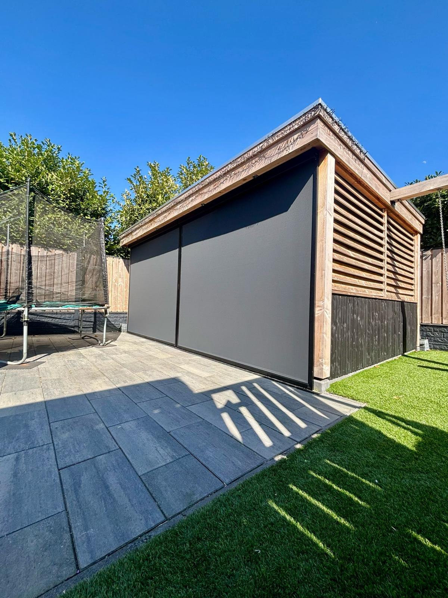
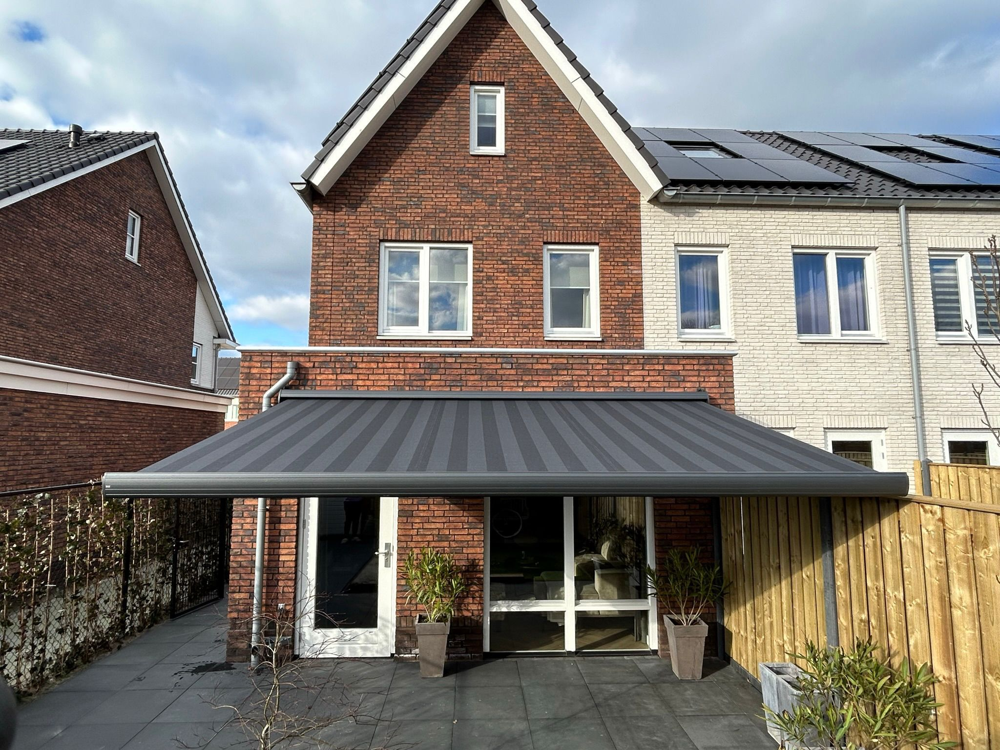
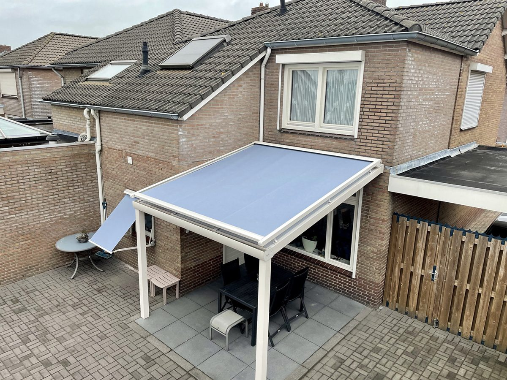
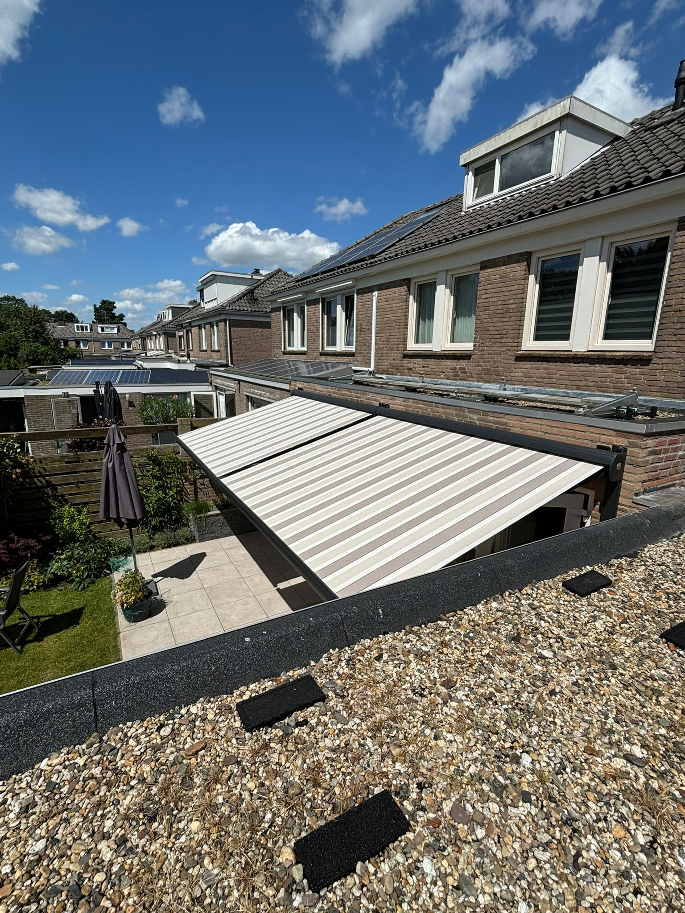
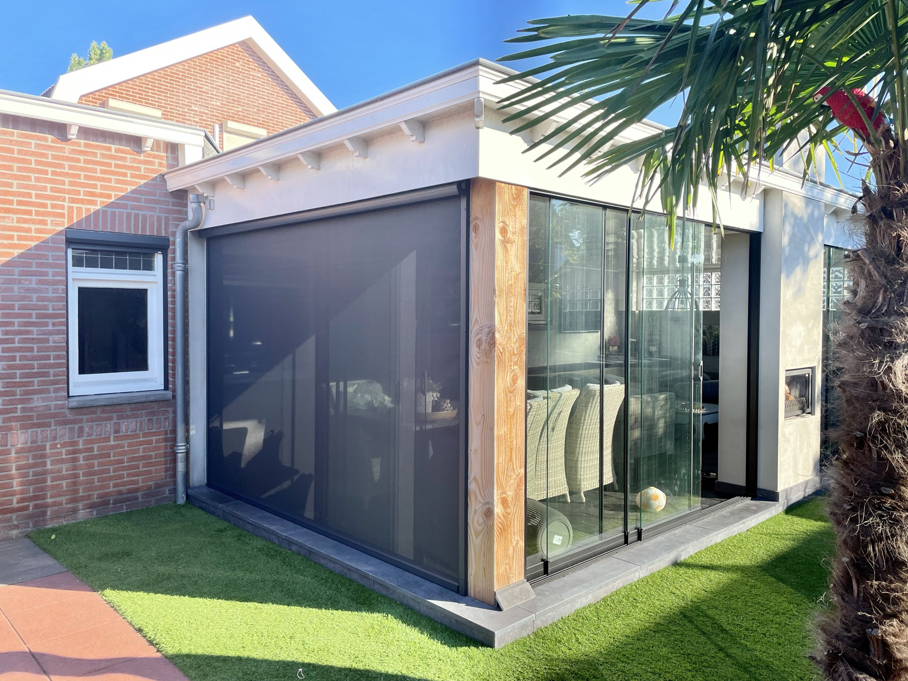
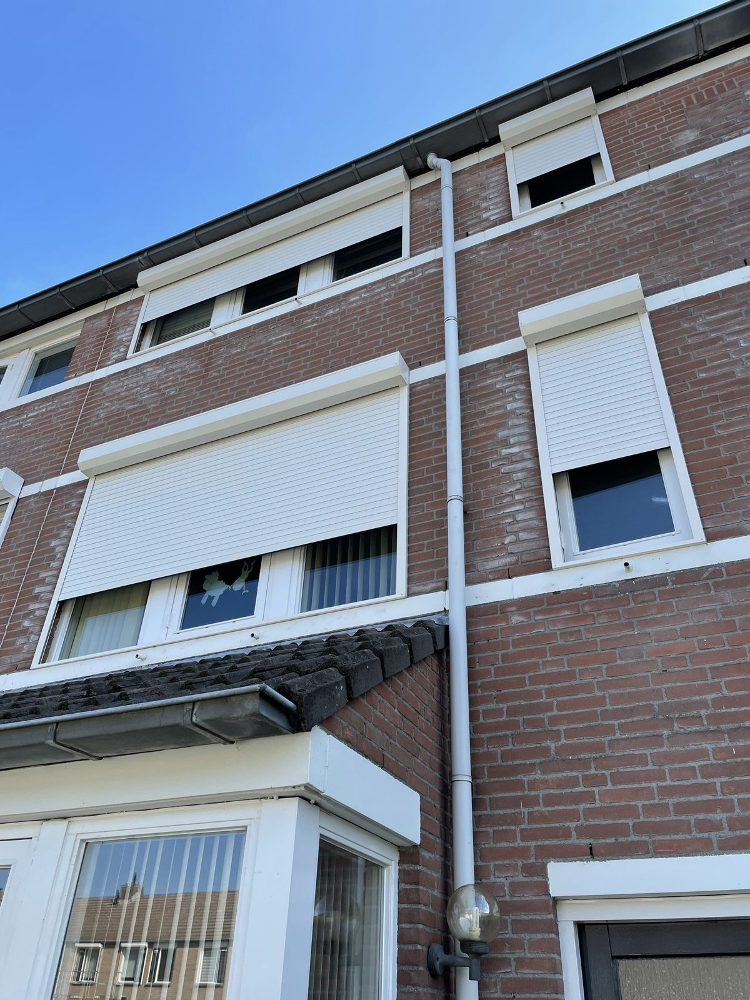
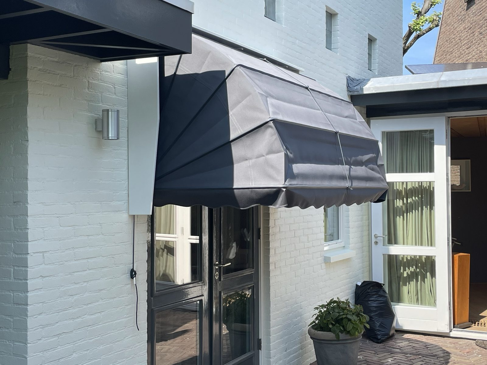
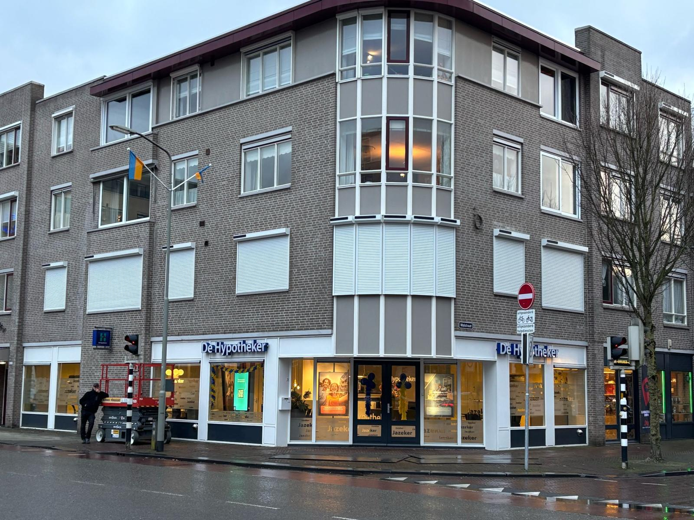
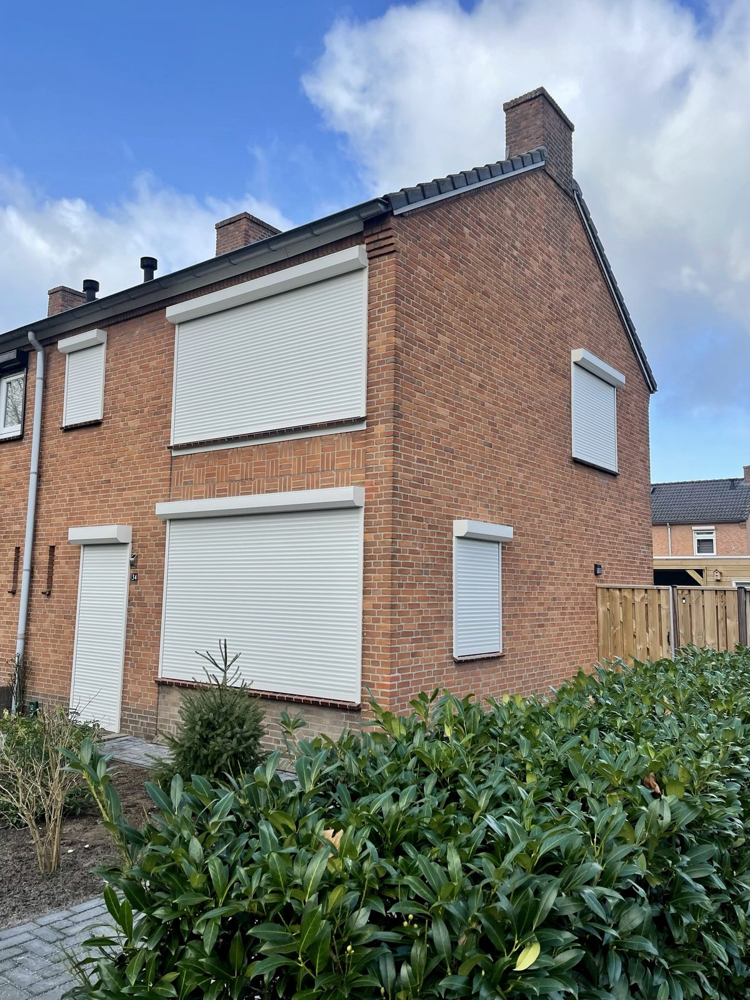

★★★★★
"Wim en Tim hebben ons volledige huis voorzien van rolluiken. Strak werk, goede nazorg en het nodige gevoel voor humor. Een aanrader!"
HHarold VerhoevenGoogle review
Ontdek het werk van Lucky Zonwering — rolluiken, screens, terraszonwering en terrasoverkappingen, grotendeels gerealiseerd in Oss en de directe omgeving. Bekijk onze projecten en lees waarom klanten ons beoordelen met een 5,0 op Google.
Een greep uit recent geplaatste zonwering bij woningen en bedrijven in de regio.

Buitenleven — OssRolluiken — Oss Screens — Berghem
Screens — Berghem
Terraszonwering — Heesch Rolluiken — Oss
Rolluiken — Oss
Veranda — Uden
Terrasoverkapping — Geffen
Screens — Oss
Rolluiken — Ravenstein
Markiezen — Oss
Zakelijk — Oss
Rolluiken — MegenEchte beelden van ons werk — screens, rolluiken en buitenleven in de praktijk.
Wat klanten in Oss en omgeving over hun project bij Lucky Zonwering zeggen.
"Wim en Tim hebben ons volledige huis voorzien van rolluiken. Strak werk, goede nazorg en het nodige gevoel voor humor. Een aanrader!"
"8 solar rolluiken gehangen door Wim, Tim en Dennis. De mannen hebben echt vakwerk afgeleverd. Heel tevreden!"
"Snel en professioneel inmeten, eerlijk advies en ze dachten goed mee. Ontzettend tevreden met het eindresultaat."
Als familiebedrijf uit Oss realiseert Lucky Zonwering de meeste van onze projecten in de eigen regio. Van rolluiken aan een rijtjeswoning tot complete terrasoverkappingen en screens bij nieuwbouw: onze monteurs zijn dagelijks in de buurt aan het werk. Doordat we lokaal werken, zijn de lijnen kort — we meten snel in, plaatsen vakkundig en blijven bereikbaar voor service en onderhoud.
Naast Oss zijn we veel actief in onder meer Berghem, Heesch, Geffen, Ravenstein, Megen, Lith, Uden en Veghel, en in de rest van Noord-Brabant. Of het nu gaat om meer privacy met rolluiken, koelte op het terras met screens en terraszonwering, of een luxe buitenkamer met een terrasoverkapping of pergola — wij maken het op maat.
Benieuwd wat wij voor uw woning kunnen betekenen? Stel online uw zonwering op maat samen of vraag direct een gratis offerte aan. Lees ook waarom klanten voor Lucky kiezen.